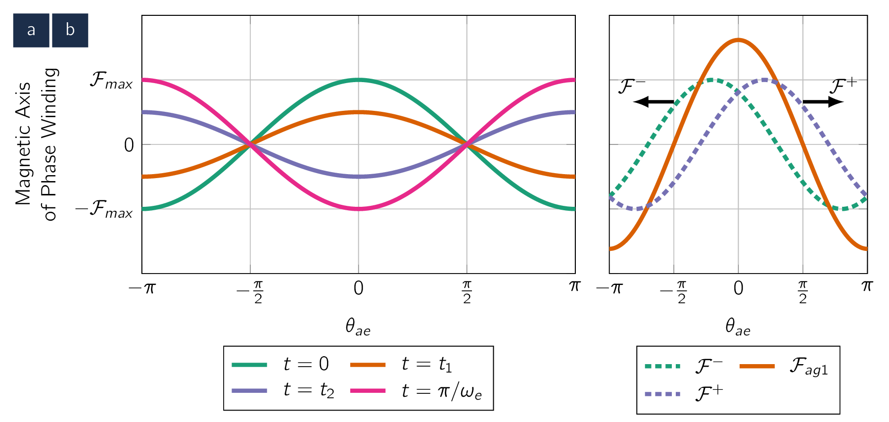
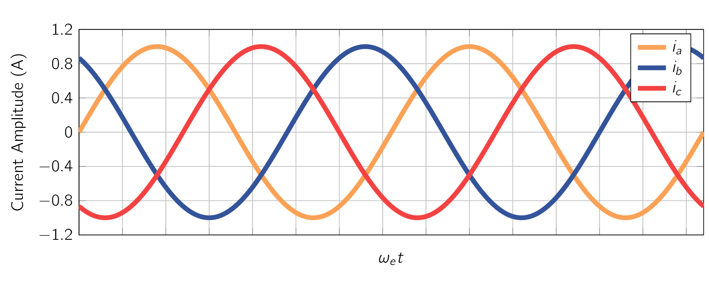

To get an understanding of the theory and operation of poly-phase ACAlternating CurrentAn electric current that periodically reverses direction and changes its magnitude continuously with time, in contrast to direct current (DC), which flows only in one direction. machines, it is important to analyse the nature of the MMFMagneto-motive ForceThe magnetic pressure which drives magnetic flux in a magnetic circuit, and is the work done to move a unit magnetic pole. wave produced by a poly-phase winding. To aid in this study, attention will be focused on a two-pole machine. We will begin with an analysis of a single-phase winding.
Fig. 4.15a shows the space-fundamental MMFMagneto-motive ForceThe magnetic pressure which drives magnetic flux in a magnetic circuit, and is the work done to move a unit magnetic pole. distribution of a single-phase winding. From Eq. (4.6) ,
| (4.14) |
where is given by Eq. (4.1) . When this winding is excited by a current varying sinusoidally in time at electrical frequency
| (4.15) |
Eq. (4.15) has been written in a form to emphasise the fact that the result is an MMFMagneto-motive ForceThe magnetic pressure which drives magnetic flux in a magnetic circuit, and is the work done to move a unit magnetic pole. distribution of maximum amplitude.
| (4.16) |
This MMFMagneto-motive ForceThe magnetic pressure which drives magnetic flux in a magnetic circuit, and is the work done to move a unit magnetic pole. distribution remains fixed in space with an amplitude that varies sinusoidally in time at frequency , as shown in Fig. 4.15a. Note that, to simplify the notation, Eq. (4.1) has been used to express the MMFMagneto-motive ForceThe magnetic pressure which drives magnetic flux in a magnetic circuit, and is the work done to move a unit magnetic pole. distribution of Eq. (4.15) in terms of the electrical angle .
Use of a common trigonometric identity permits Eq. (4.15) to be rewritten in the form
| (4.17) |
which shows that the MMFMagneto-motive ForceThe magnetic pressure which drives magnetic flux in a magnetic circuit, and is the work done to move a unit magnetic pole. of a single-phase winding can be resolved into two (2) rotating MMFMagneto-motive ForceThe magnetic pressure which drives magnetic flux in a magnetic circuit, and is the work done to move a unit magnetic pole. waves, each of amplitude equal to one-half the maximum amplitude of with one, , rotating in the direction and the other, , rotating in the direction
| (4.18) |

Both flux waves rotate in their respective directions with electrical angular velocity , corresponding to a mechanical angular velocity where
| (4.19) |
where is the rotational speed in . The fact that the air-gap MMFMagneto-motive ForceThe magnetic pressure which drives magnetic flux in a magnetic circuit, and is the work done to move a unit magnetic pole. of a single-phase winding excited by a source of ACAlternating CurrentAn electric current that periodically reverses direction and changes its magnitude continuously with time, in contrast to direct current (DC), which flows only in one direction. can be resolved into rotating traveling waves is an important conceptual step in understanding ACAlternating CurrentAn electric current that periodically reverses direction and changes its magnitude continuously with time, in contrast to direct current (DC), which flows only in one direction. machinery.
In single-phase ACAlternating CurrentAn electric current that periodically reverses direction and changes its magnitude continuously with time, in contrast to direct current (DC), which flows only in one direction. machinery, the positive-travelling flux wave produces useful torque while the negative-travelling flux wave produces both negative and pulsating torque as well as losses.
Although single-phase machines are designed so as to minimise the effects of the negative-traveling flux wave, they cannot be totally eliminated. On the other hand, in poly-phase ACAlternating CurrentAn electric current that periodically reverses direction and changes its magnitude continuously with time, in contrast to direct current (DC), which flows only in one direction. machinery, the windings are equally displaced in space phase, and the winding currents are similarly displaced in time phase, with the result that the negative-travelling flux waves of the various windings sum to zero while the positive-travelling flux waves reinforce, giving a single positive-travelling flux wave.
It is time to study the MMFMagneto-motive ForceThe magnetic pressure which drives magnetic flux in a magnetic circuit, and is the work done to move a unit magnetic pole. distributions of three-phase windings such as those found on the stator of three-phase IMInduction Machinean AC electric motor in which the electric current in the rotor that produces torque is obtained by electromagnetic induction from the magnetic field of the stator winding. and SynMSynchronous Machinean AC electrical device which operates at a constant synchronous speed, serving as either a synchronous generator (alternator) or a synchronous motor. It features a stationary stator with three-phase windings and a rotating rotor excited by direct current (DC) or permanent magnets.s. The analyses we will work here can be readily extended to a poly-phase winding with any number of phases. Once again attention is focused on a two-pole machine or one pair of poles of a multi-pole winding.
In a three-phase machine, the windings of the individual phases are displaced from each other by electrical in space around the air-gap circumference, as shown by coils (a, -a), (b, -b), and (c, -c) in Fig. 4.16.
The concentrated full-pitch coils shown here may be considered to represent distributed windings producing sinusoidal MMFMagneto-motive ForceThe magnetic pressure which drives magnetic flux in a magnetic circuit, and is the work done to move a unit magnetic pole. waves centered on the magnetic axes of the respective phases. The space-fundamental sinusoidal MMFMagneto-motive ForceThe magnetic pressure which drives magnetic flux in a magnetic circuit, and is the work done to move a unit magnetic pole. waves of the three phases are accordingly displaced electrical in space. Each phase is excited by ACAlternating CurrentAn electric current that periodically reverses direction and changes its magnitude continuously with time, in contrast to direct current (DC), which flows only in one direction. which varies in magnitude sinusoidally with time.
Under balanced three-phase conditions, the instantaneous currents are as follows:
| (4.20) |
where is the maximum value of the current and the time origin is arbitrarily taken as the instant when the phase-a current is at its positive maximum. The phase sequence is assumed to be abc. The instantaneous currents are shown in Fig. 4.17. The dots and crosses in the coil sides, shown in Fig. 4.16, indicate the reference directions for positive phase currents.

The MMFMagneto-motive ForceThe magnetic pressure which drives magnetic flux in a magnetic circuit, and is the work done to move a unit magnetic pole. of phase a has been shown to be:
| (4.21) |
where:
and
| (4.23) |
To avoid excessive notational complexity, the subscript ag has been dropped.
Here the subscript a1 indicates the space-fundamental component of the phase-a air-gap MMFMagneto-motive ForceThe magnetic pressure which drives magnetic flux in a magnetic circuit, and is the work done to move a unit magnetic pole.. Similarly, for phases and , whose axes are at and respectively, their air-gap MMFMagneto-motive ForceThe magnetic pressure which drives magnetic flux in a magnetic circuit, and is the work done to move a unit magnetic pole.s can be shown to be
and
The total MMFMagneto-motive ForceThe magnetic pressure which drives magnetic flux in a magnetic circuit, and is the work done to move a unit magnetic pole. is the sum of the contributions from each of the three phases as:
| (4.30) |
This summation can be performed quite easily in terms of the positive and negative travelling waves. The negative-travelling waves sum to zero:
while the positive-travelling waves reinforce
Therefore, the result of displacing the three windings by in space phase and displacing the winding currents by in time phase is a single positive-travelling MMFMagneto-motive ForceThe magnetic pressure which drives magnetic flux in a magnetic circuit, and is the work done to move a unit magnetic pole. wave
| (4.33) |
The air-gap MMFMagneto-motive ForceThe magnetic pressure which drives magnetic flux in a magnetic circuit, and is the work done to move a unit magnetic pole. wave described by Eq. (4.33) is a space-fundamental sinusoidal function of the electrical space angle . [93] Which means the space angle /poles. It has a constant amplitude of (3/2) , which is 1.5 times the peak amplitude of the air-gap MMFMagneto-motive ForceThe magnetic pressure which drives magnetic flux in a magnetic circuit, and is the work done to move a unit magnetic pole. wave produced by the individual phases alone. It has a positive peak at angle . Therefore, under balanced three-phase conditions, the three-phase winding produces an air-gap MMFMagneto-motive ForceThe magnetic pressure which drives magnetic flux in a magnetic circuit, and is the work done to move a unit magnetic pole. wave which rotates at synchronous angular velocity :
| (4.34) |
where is the angular frequency of the applied electrical excitation (), and is synchronous spatial angular velocity of the air-gap MMFMagneto-motive ForceThe magnetic pressure which drives magnetic flux in a magnetic circuit, and is the work done to move a unit magnetic pole. wave (). The corresponding synchronous speed in r/min can be expressed in terms of the applied electrical frequency
| (4.35) |
In general, a rotating field of constant amplitude will be produced by a q-phase winding (q 3) excited by balanced q-phase currents of frequency when the respective phase axes are located electrical radians apart in space. The amplitude of this flux wave will be times the maximum contribution of any one phase, and the synchronous angular velocity will remain s = (2 e/poles) radians per second.
For a two phase machine, the phase axes are located electrical radians apart in space and the amplitude of the rotating flux wave will be equal to that of the individual phases.
Summary In this section, we have seen that a poly-phase winding excited by balanced poly-phase currents produces a rotating MMFMagneto-motive ForceThe magnetic pressure which drives magnetic flux in a magnetic circuit, and is the work done to move a unit magnetic pole. wave. Production of a rotating MMFMagneto-motive ForceThe magnetic pressure which drives magnetic flux in a magnetic circuit, and is the work done to move a unit magnetic pole. wave and the corresponding rotating magnetic flux wave is key to the operation of poly-phase rotating electrical machinery. It is the interaction of this magnetic flux wave with that of the rotor which produces torque. Constant torque is produced when rotor-produced magnetic flux wave rotates in synchronism with that of the stator.
-
¶
- SynMSynchronous Machine
an AC electrical device which operates at a constant synchronous speed, serving as either a synchronous generator (alternator) or a synchronous motor. It features a stationary stator with three-phase windings and a rotating rotor excited by direct current (DC) or permanent magnets.
-
¶
- IMInduction Machine
an AC electric motor in which the electric current in the rotor that produces torque is obtained by electromagnetic induction from the magnetic field of the stator winding.
-
¶
- MMFMagneto-motive Force
The magnetic pressure which drives magnetic flux in a magnetic circuit, and is the work done to move a unit magnetic pole.
-
¶
- ACAlternating Current
An electric current that periodically reverses direction and changes its magnitude continuously with time, in contrast to direct current (DC), which flows only in one direction.